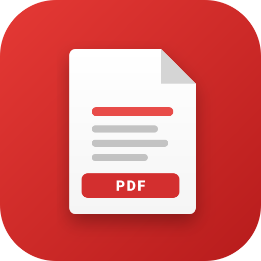

Lettore PDF Libero
100% Gratis • Senza Pubblicità • Offline
🌓
📂
Apri un documento PDF
Tocca qui per scegliere un file dal tuo dispositivo
Seleziona File
📚 Documenti Recenti
Cancella tutti
📖
Nessun documento recente
I PDF aperti verranno salvati localmente per continuare la lettura quando vuoi.
←
Documento.pdf
Pagina singola
🎨
📜
⛶
☀️ Giorno (Standard)
🌙 Notte (Inverti Colori)
📜 Seppia (Lettura rilassante)
Notifica